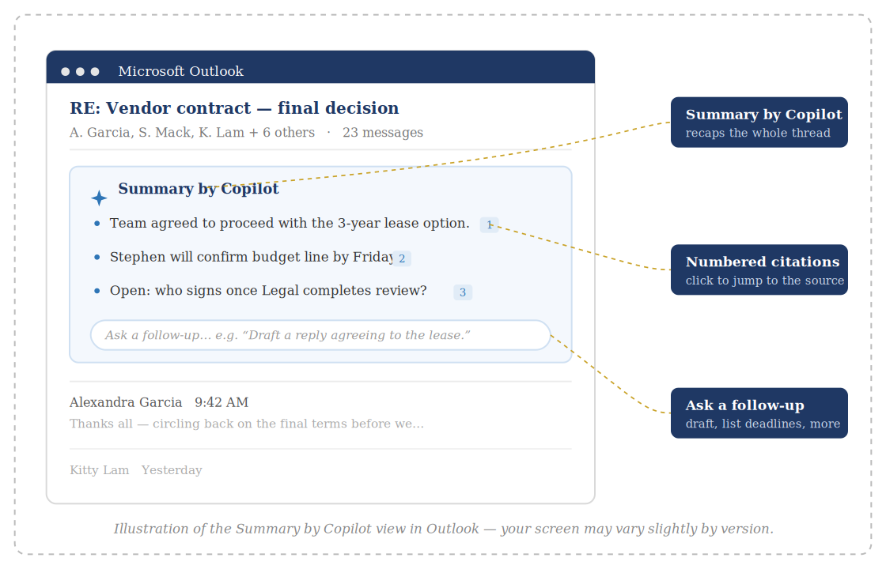

One quick tip. About a minute to read. Something you can use today.
This Week’s Tip
Let Copilot read a long email thread for you and hand back a 30-second summary.
Why it matters
We’ve all opened a thread with a dozen replies and had to scroll to the bottom, then back to the top, just to work out what was decided and whether anything is waiting on us. Copilot can read the whole conversation and hand back a short recap — the key points and any action items — so you know what matters before you’ve finished your coffee.
How to do it

Illustration of the Summary by Copilot view in Outlook — your screen may vary slightly by version.
Try an AI prompt this week
Open Copilot Chat in Outlook or Teams.
Past issues live on the CFS intranet — IT Help & Resources.
Have a topic idea or question? Email HelpDesk@cfsny.org.
— Jim Noriega and the CFS IT Team